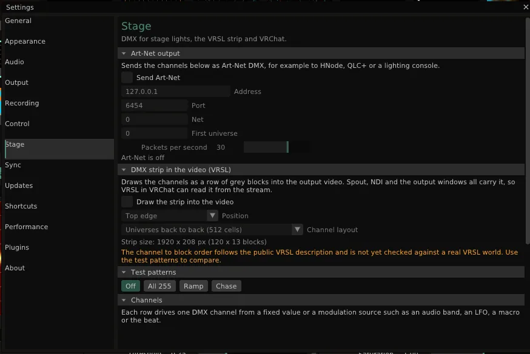

Contents
Getting started
- Welcome to NyrexVJ
- Installing and first start
- The window at a glance
- Your first show in five minutes
Playing visuals
- The clip grid
- Decks and transitions
- Layers and blending
- The Clip window
- Effects
- The Library
- Presets and sessions
- The Master window
Music and motion
Your own content
- Video and image clips
- Your own shaders
- 3D models
- The Clip Creator
- Text, particles and effect chains
- The node effect editor
- Live sources: Spout, NDI and cameras
Output and recording
Live control and shows
- Control: MIDI, OSC and the web page
- Show sync and timecode
- The show timeline
- Stage: DMX, VRSL and VRChat
- Plugins
Reference and help
Manual / Live control and shows
Stage: DMX, VRSL and VRChat
#What it does
Settings, Stage turns any control into lighting data. Three parts work independently of each other. Art-Net sends DMX channels over the network, for example to HNode, QLC+ or a lighting console. The DMX strip draws the same channels as a row of grey blocks into the output video, the way VRSL reads DMX inside a video stream. VRChat parameters send values to your avatar over OSC.


#Channels
Each channel row has a name, a universe from 1 to 4, a channel from 1 to 512 and a source. The source is Fixed, with a value you set, or any modulation source: Bass, Mid, High, Level, Kick, an LFO, a macro, Beat or Bar. Two numbers set the value at source 0 and at source 1, and Invert reverses it. 16 bit uses the chosen channel and the next one. You can set up to 128 channels. A macro moves a light exactly like it moves an effect.
#Art-Net
Send Art-Net turns the output on. Set the Address of the node, the Port, the Net and the First universe. Universe 1 of NyrexVJ is sent as the first Art-Net universe and the next ones follow. Packets per second sets the rate. NyrexVJ only sends and does not answer polls from other devices.
#The strip in the video
Draw the strip into the video puts a strip of 120 by 13 blocks at the top or bottom edge of the output picture. Every block shows one channel as grey, from black for 0 to white for 255. Use Channel layout to choose how the channels are arranged. At 1920 x 1080 every block has exactly 16 x 16 pixels. The strip covers the picture below it, so keep that edge free in your visuals.
#VRChat parameters
Send to VRChat sends values to VRChat over OSC. Add a parameter, type its name as it is in the avatar and choose the source. Updates per second sets the rate.
#Test patterns
The test patterns override the channels with a signal on Art-Net and on the strip until you choose Off. Use them to check the cabling and the world before you build a show.
Found a mistake or something missing? Tell us on GitHub. The same manual is built into the program, so you have it without internet. Open it with F1 or from the Help menu, then User manual.